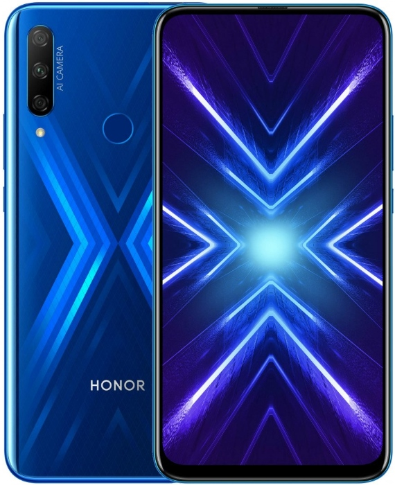
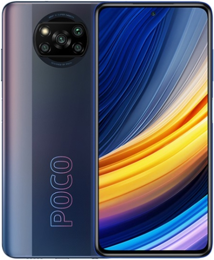
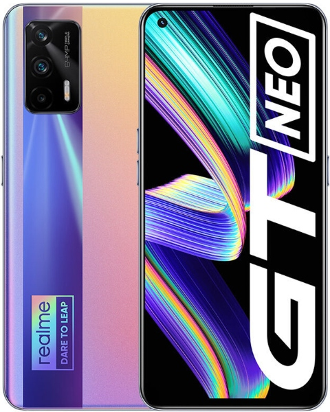
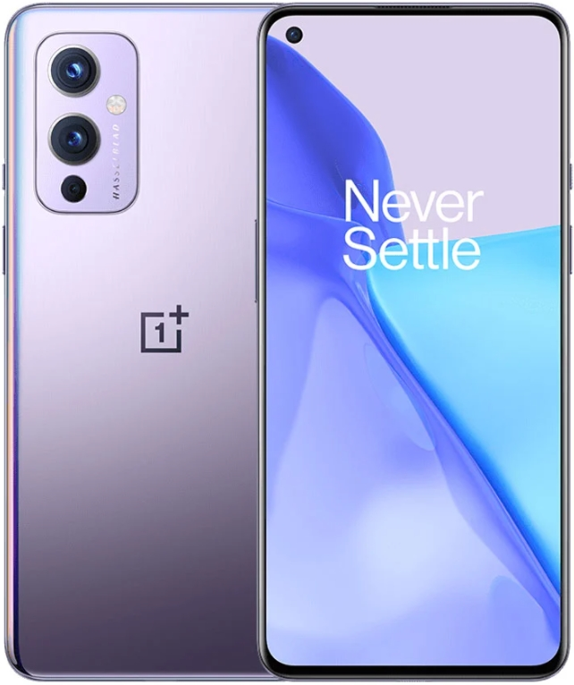
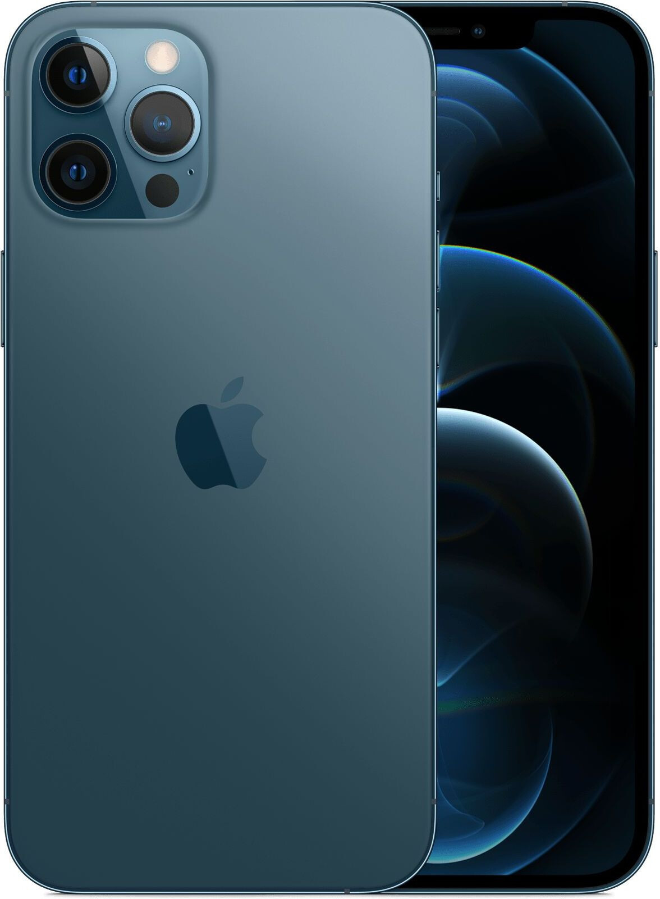

Honor 9X 128GB/4GB
Вес (г): 197; Размеры (мм): 163.5x77.3x8.8; Время работы (PCMark) (ч): 12; Емкость (мАч): 4000; цифровой компас; ГЛОНАСС; GPS-модуль; aGPS; фонарик; гироскоп; шумоподавление; FM-приемник; mini-Jack (3.5 мм); USB C: USB C; USB хост (OTG); Bluetooth: Bluetooth v 4.2; Wi-Fi: Wi-Fi 5 (802.11ac); 4G (LTE) Рейтинг модели: 4 из 5 (19 оценок)

Poco X3 Pro 128GB
Вес (г): 215; Размеры (мм): 165.3x76.8x9.4; Влагозащита: IP53; Емкость (мАч): 5160; цифровой компас; ГЛОНАСС; GPS-модуль; aGPS; фонарик; гироскоп; шумоподавление; FM-приемник; стереозвук; mini-Jack (3.5 мм); USB C: USB C; USB хост (OTG); поддержка aptX: aptX HD; Bluetooth: Bluetooth v 5.0; Wi-Fi: Wi-Fi 5 (802.11ac) Рейтинг модели: 4 из 5 (69 оценок)

Realme GT Neo 128GB/8GB
Вес (г): 179; Размеры (мм): 158.5x73.3x8.4; Емкость (мАч): 4500; цифровой компас; ГЛОНАСС; GPS-модуль; aGPS; фонарик; гироскоп; шумоподавление; стереозвук; mini-Jack (3.5 мм); USB C: USB C; NFC-чип; USB хост (OTG); Bluetooth: Bluetooth v 5.1; Wi-Fi: Wi-Fi 6 (802.11ax); CDMA; VoLTE; 5G; 4G (LTE); 3G Рейтинг модели: 5 из 5 (5 оценок) Вес (г): 179; Размеры (мм): 158.5x73.3x8.4; Емкость (мАч): 4500; цифровой компас; ГЛОНАСС; GPS-модуль; aGPS; фонарик; гироскоп; шумоподавление; стереозвук; mini-Jack (3.5 мм); USB C: USB C; NFC-чип; USB хост (OTG); Bluetooth: Bluetooth v 5.1; Wi-Fi: Wi-Fi 6 (802.11ax); CDMA; VoLTE; 5G; 4G (LTE); 3G Рейтинг модели: 5 из 5 (5 оценок)

OnePlus 9 128GB
Вес (г): 192; Размеры (мм): 160x74.2x8.7; Емкость (мАч): 4500; цифровой компас; ГЛОНАСС; Dual GPS; GPS-модуль; aGPS; фонарик; гироскоп; шумоподавление; стереозвук; USB C: USB C 3.2 gen1; NFC-чип; USB хост (OTG); поддержка aptX: aptX HD; Bluetooth: Bluetooth v 5.2; Wi-Fi: Wi-Fi 6 (802.11ax); CDMA; VoLTE Рейтинг модели: 5 из 5 (2 оценки)

Apple iPhone 12 Pro 128GB
Вес (г): 192; Размеры (мм): 160x74.2x8.7; Емкость (мАч): 4500; цифровой компас; ГЛОНАСС; Dual GPS; GPS-модуль; aGPS; фонарик; гироскоп; шумоподавление; стереозвук; USB C: USB C 3.2 gen1; NFC-чип; USB хост (OTG); поддержка aptX: aptX HD; Bluetooth: Bluetooth v 5.2; Wi-Fi: Wi-Fi 6 (802.11ax); CDMA; VoLTE Рейтинг модели: 5 из 5 (2 оценки)